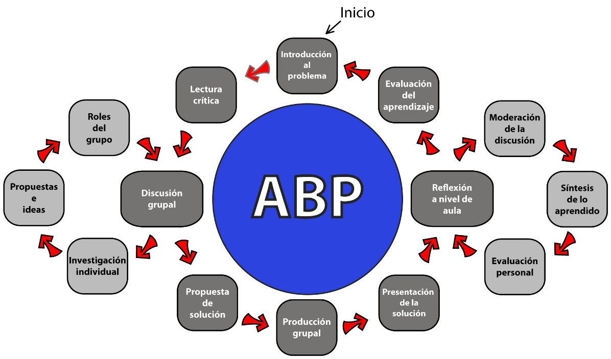

Solución de problemas
- 
 Solución de problemas
Solución de problemas
La solución de problemas es una técnica de evaluación alternativa que se sustenta en el hecho de que la capacidad de resolver problemas y tomar decisiones es una competencia indispensable en cualquier profesión; de hecho, la vida profesional presenta continuamente situaciones que el egresado debe resolver de manera aceptable.
De ésta forma, la solución de problemas es una actividad cognitiva que consiste en proporcionar una respuesta o producto que satisfaga una situación que tenga las siguientes condiciones:
- Una situación que se caracteriza por ser insatisfactoria y requiere una rectificación, por ejemplo, presentar la situación problemática de una mujer que tiene una familia disfuncional y hace un año había sido tratada anteriormente por un tumor en su seno derecho y ahora nuevamente se presenta aterrorizada porque se ha encontrado otra “bolita” en su otro seno izquierdo.
- Una solución que requiere que el estudiante aplique una combinación de reglas o de principios, por ejemplo, presentar el caso de un hombre de 47 años que se presenta con dolor de pecho, con ansiedad, sudando, con miedo y con una familia disfuncional. En este caso el estudiante deberá relacionar principios que tienen que ver con una perspectiva biológica, una psicológica, una sociológica y otra poblacional.
- Una solución que no se ha presentado antes. Aquí cabe citar lo que hacía Amos Comenius, en el siglo XVII en su clase inicial de lenguaje, en la cual le daba a los estudiantes un dibujo mostrando una situación y les decía: “Mañana traigan lo que ven por escrito en alemán, checo y latín”; los estudiantes replicaban “pero no sabemos ninguna gramática” a lo que Comenius respondía: “Ese es problema de ustedes, tienen que ir a buscarla y aplicarla”.
La solución al problema se puede solicitar al alumno de forma individual o grupal; es decir, se organizan equipos de cuatro a seis participantes y lo que se evaluará también es el proceso de trabajo grupal, es decir, la responsabilidad y confianza en el trabajo realizado en el grupo, además de la habilidad de dar y recibir críticas orientadas a la mejora de su desempeño y del proceso de trabajo del grupo.
Características
- El diseño del problema debe comprometer el interés de los alumnos y motivarlos a examinar de manera profunda los conceptos y objetivos que se quieren aprender. Cabe señalar que, el problema debe estar en relación con los objetivos del curso y con problemas o situaciones de la vida diaria para que los alumnos encuentren un significado al trabajo que realizan.
- Los problemas deben llevar a los alumnos a tomar decisiones o hacer juicios basados en hechos, en información lógica y fundamentada; por lo tanto, los problemas deben requerir que los estudiantes definan qué suposiciones son necesarias y por qué, que información es relevante y qué pasos o procedimientos son necesarios con el propósito de resolver el problema.
- En caso de evaluar al alumno dentro de un equipo, la longitud y complejidad del problema debe evitar que los alumnos se dividan el trabajo y cada uno se ocupe únicamente de su parte.
- Las preguntas que se realicen para guiar a los alumnos a solucionar el problema deben presentar las siguientes características: Preguntas abiertas, es decir que no se limiten a una respuesta concreta; preguntas que estén ligadas a un aprendizaje previo y preguntas que despierten diversas opiniones.
Solución de un problema
- Leer y analizar el problema;
- Identificar el objetivo que se pretende cumplir al solucionar el problema;
- Identificar la información con la que se cuenta;
- Identificar la información o habilidades que se requieren para solucionar el problema;
- Elaborar un plan de trabajo;
- Recopilar la información que se requiere para solucionar el problema;
- Analizar la información recopilada;
- Plantearse los resultados;
- Retroalimentación constante a lo largo de todo el proceso de solución.
Cabe señalar que aunque todos los pasos son importantes en la solución del problema, es fundamental la retroalimentación, por lo que ésta debe hacerse de manera regular y es una responsabilidad del profesor. La retroalimentación no debe ser positiva o negativa sino debe tener un propósito, descriptivo, identificando y aprovechando todas las áreas de mejora posibles.
Categorías de la evaluación
Dentro de esta técnica se identifican las siguientes categorías de evaluación:
- Preparación para la sesión: Evaluar si el alumno es capaz de utilizar material relevante durante la sesión, aplica conocimientos previos, demuestra iniciativa, curiosidad, y organización.
- Capacidad para identificar problemas: El alumno debe ser capaz de identificar desviaciones con respecto a lo que se considera como normal o deseable; o bien, identificar problemas potenciales o problemas de mejora de una situación de su ámbito profesional.
- Capacidad para definir y representar con precisión los problemas: El alumno debe tener la capacidad para definir el problema de manera sintética, eliminando síntomas del problema o elementos que no lo determinan.
- Capacidad para explorar estrategias de solución: Esta es una habilidad que refleja tanto la creatividad del estudiante como su conocimiento sobre un tema. Respecto a la creatividad ésta se representa en el número y naturaleza de las opciones que proponga. Asimismo, es importante que analice cada una de ellas considerando su viabilidad; lo anterior exige que el estudiante tenga un conocimiento de la realidad del campo profesional, de los criterios que se utilizan en la toma de decisiones y de la forma en la cual se aplicaría en un caso concreto.
- Llevar a cabo las estrategias o estrategia elegida: Esto puede evaluarse a través de la forma en la cual el estudiante implementa un proyecto; es decir, su capacidad para planear o diseñar un producto o un proceso.
- Observar los efectos de las estrategias implementadas: Implica llevar a los estudiantes a valorar los resultados de sus acciones, lo cual constituye una experiencia muy importante para el aprendizaje ya que observar y valorar las consecuencias (sean positivas o negativas) de sus propuestas, incrementa notablemente el dominio que pueda tener el estudiante sobre el tema.
- Participación y contribuciones al trabajo de grupo: Implica evaluar si el alumno participa de manera constructiva y apoya al proceso de grupo; tiene la capacidad de dar y aceptar retroalimentación y estimula el trabajo colaborativo.
Tipos de problemas
En la aplicación de esta técnica de evaluación es importante identificar primero si se trata de un problema estructurado o no estructurado. En un problema estructurado se debe considerar un algoritmo de solución, el cual deberá ser seguido por el estudiante. Tanto el proceso como el resultado son predeterminados.
En un problema no estructurado se debe considerar parámetros de respuesta amplios, en los cuales el valor o la ponderación más alta se asigna a las estrategias de solución y a su análisis; por lo tanto, en este tipo de problemas no hay una sola respuesta correcta.